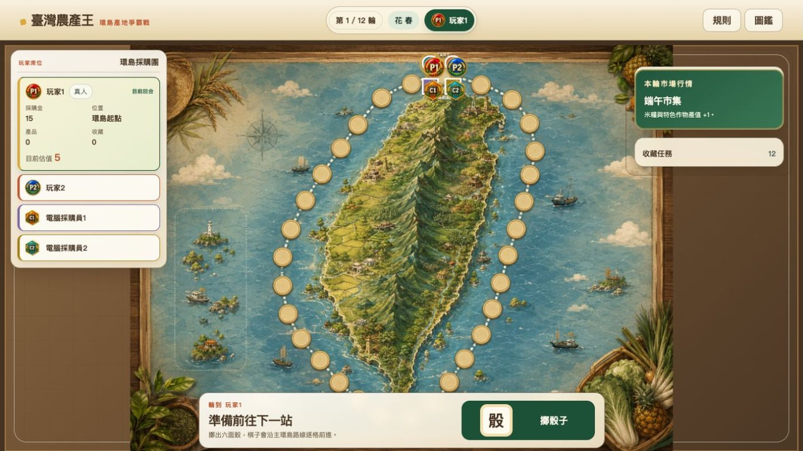
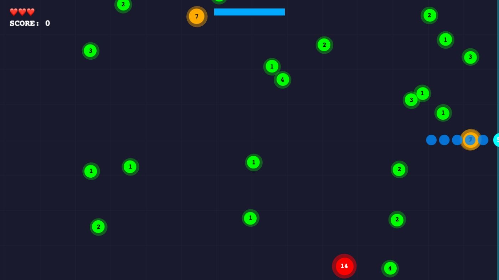

用 AI 建立你的
第一個官網
從 ChatGPT、Codex 到 GitHub Pages，跟著真實案例，規劃、建置並發布第一個網站。
ChatGPTCodexGitHub Pages
開始學習
或從第一課開始
AI 課程・筆記・互動實作
從 ChatGPT、Codex 到 GitHub Pages，跟著真實案例，規劃、建置並發布第一個網站。
ChatGPT × NotebookLM × Notion
從一句需求，到真正能在手機上操作的作品。
閱讀實作方法記錄影像試作，留下比較與觀察。

同一張參考圖、同一組提示詞，卻演出兩種完全不同的氣場。

以悟空與二郎神的對戰情境，記錄影片試做。
採用網路分享、標示為 Fable 5 所寫的提示詞，進行 Grok 影片試做。
【GPT-5.6 三種力量，三種選擇】 ↗相關參考：認識 GPT-5.6 的 Sol、Terra、Luna 三種定位與選擇。
跟 AI 一起做出來的互動作品，直接打開，操作看看。

